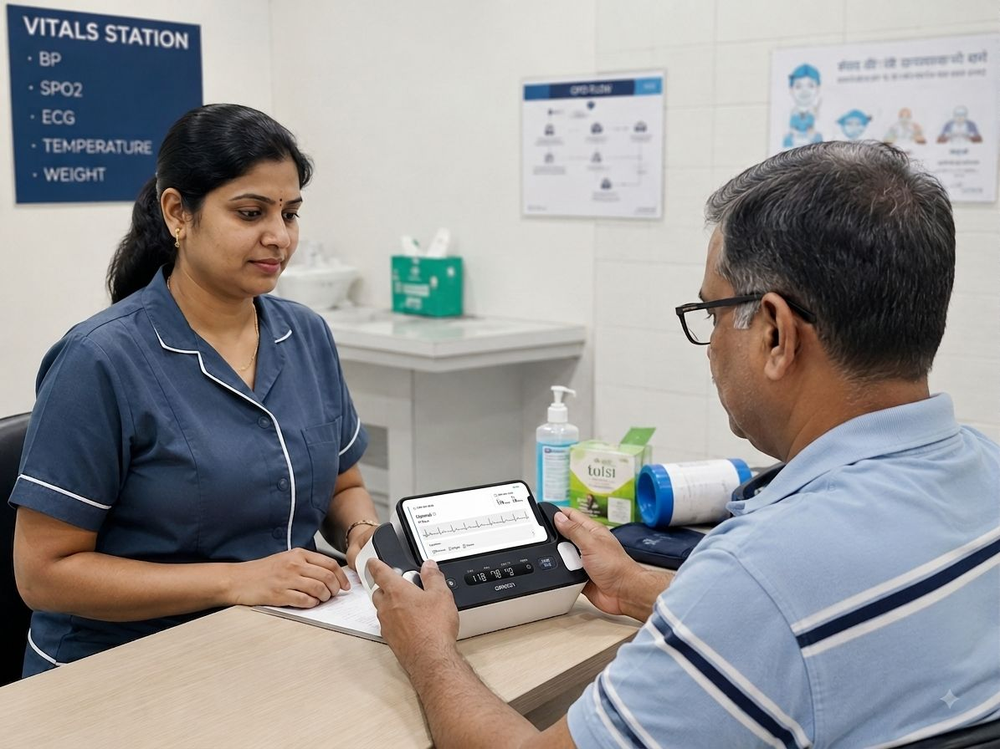
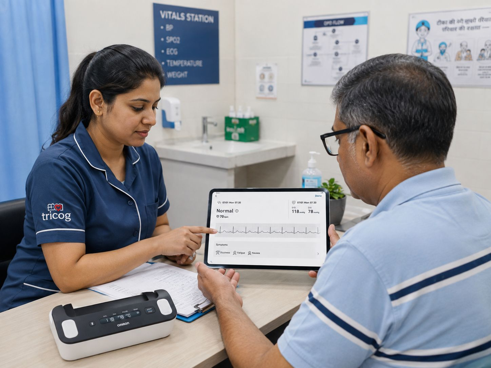
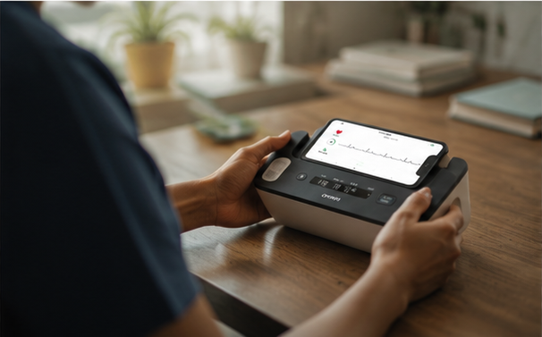

Detect signs of cardiovascular risk from a 30-second single-lead ECG
TCC reads a quick single-lead ECG and gives you a Low, Moderate or High risk category in seconds. Makes it easy to decide what to do next with each patient.
Trusted by healthcare teams delivering earlier cardiac intervention.
- Clinical Validation
Validated on held-out data. Reported with confidence intervals.
Built on millions of single-lead ECGs and measured against recordings the model never saw in training.
ECG recordings
populations
benchmarks
A result that is not flagged high risk does not exclude disease, and does not replace a 12-lead ECG or clinical assessment.
Screening and risk stratification only — not a diagnosis.
Additive only — cannot downgrade a clinical decision.
Requires clinical consultation by a qualified professional.
Not tested under 18 or in pregnancy.
Not for patients with pacemakers or ICDs.
Classifiable waveforms required.
Tricog CardioCheck is a CDSCO-certified, cloud-based Software as a Medical Device (SaMD), intended for use by healthcare professionals, patients with known or suspected cardiac conditions, and health-conscious individuals.
- The Gap
The gap is detection,
not treatment.
Once a cardiac condition is spotted, the care already exists. The gap is discovery — most people never know they’re at risk, so they never reach a doctor at all.
110 million
Indians live with cardiovascular disease today — a number set to more than double by 2050.¹
1 in 4
deaths in India is cardiac.²
About 1 in 5
of the world's cardiac deaths happen in India.³
Detected
The few who get diagnosed.
Undetected
TThe millions who don’t..
- HOW TCC IS DIFFERENT
Built for clinical screening, not consumer monitoring.
Consumer gadgets watch one person who already suspects a problem. Traditional triage only tests the patients a doctor already worries about. TCC screens everyone, inside a normal visit.
|
Tricog CardioCheck
|
Other 1-Lead ECGs
|
ECG in Watch
|
Traditional Triage
|
|
|---|---|---|---|---|
| Who it's for | Every patient at the clinic | People who already know they have a condition | Consumer smartwatch users | Only patients a doctor suspects |
| What it looks for | Dozens of findings across Low / Moderate / High | 4 rhythms only | AFib + irregular rhythm | Depends on symptoms |
| What you get back | A clear risk level + the next step | A rhythm label | A rhythm alert | A judgement call |
| Fits the vitals workflow ⓘ |
Yes, adds ~30–50s
|
— | — | — |
| Cardiologist on site |
Not needed
|
— | — | Required |
| Time to result | ~10s (after a 30-sec ECG) | — | — | — |
| Device | OMRON Complete (only) | Own device | Consumer smartwatch | 12-lead machine |
| Regulatory | CDSCO-certified, Class B SaMD | Consumer | Consumer | — |
- IN THE FLOW OF A NORMAL VISIT
Fits the existing outpatient workflow.

Check in as usual.
The patient arrives for whatever brought them in.

During routine vitals.
Fingers and thumbs on the OMRON pads, sit still for 30 seconds — alongside BP, SpO2, height and weight. No wires, no gel.
A result in seconds.
A risk level — Low, Moderate or High — appears on the staff member’s phone.
A clear next step.
Low: carry on. Moderate or High: sent for a 12-lead ECG and the doctor, soon.
June 2025 — a village clinic outside Bengaluru.
400+ people screened in a single day. TCC, then a 12-lead ECG, then the doctor — a complete care journey, in the field.
Read the storyEverything the clinician needs at the point of care
Request a Live DemoThe output is a structured triage signal that arrives while the patient is still in front of you.
Risk Category: Low, Moderate or High.
Clinical Insights: the waveform patterns that drove the classification.
Referral Guidance: the recommended next action (12-lead ECG and clinical review when
indicated)
Built for where care actually happens.
The same 30-second capture, adapted to your setting — from high-volume OPDs to rural health centres.
Questions, answered.
TCC does not diagnose a cardiac condition. The final assessment and next steps are determined by the treating clinician based on the patient’s symptoms, history, examination, and other clinical findings.
Through our partnership with OMRON Healthcare, ECG data captured by these devices is securely transmitted to the cloud and analyzed by the TCC algorithm to provide a Low, Moderate, or High cardiovascular risk assessment in approximately 10 seconds.
A 12-lead ECG provides a more comprehensive assessment of the heart’s electrical activity and may be recommended by a clinician following a TCC result, based on the patient’s symptoms, history, and clinical findings.
TCC is also validated on separate ECG data to assess how reliably it identifies different levels of cardiac risk.
Clinical Resources
Short reads on why cardiac risk goes undetected — and what changes when it doesn’t.
Add cardiac risk screening to routine visits
Most cardiac abnormalities remain invisible until symptoms appear. The patients at risk may be the ones who don't appear sick. CardioCheck helps uncover hidden cardiac risk during routine screening, creating an opportunity for earlier intervention.
